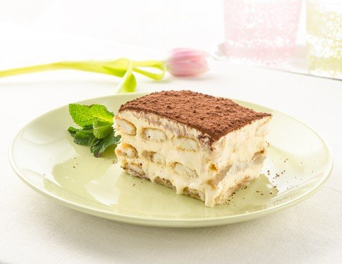

Tiramisu

Description
It is a coffee-flavoured Italian dessert
Warning: Tiramisu can get you addicted!
Ingredients
- Lady fingers
- Mascarpone
- Espresso
- Powdered sugar
- Heavy Whipped cream
- Vanilla extract
- Cocoa powder
Steps
- Mix creamy filling. Beat the mascarpone, cream, sugar, and vanilla together until stiff peaks.
- Dip lady fingers. Add the espresso and liqueur to a shallow bowl and dip the lady fingers on both sides (don't let them soak, just a quick dip!)
- Layer mascarpone.
- Repeat.